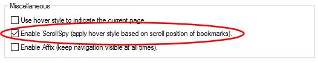
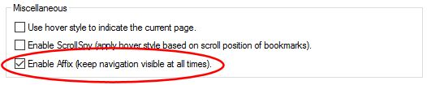
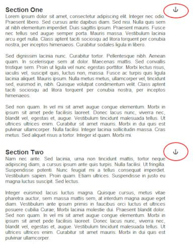
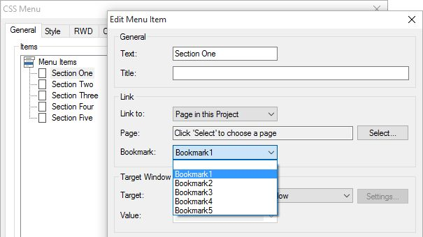

How to use Affix and ScrollSpy?
Although Affix and ScrollSpy are two separate features they are often used together.
ScrollSpy
ScrollSpy is a navigation mechanism that automatically highlights the navigation buttons based on the scroll position to indicate the visitor where they are currently on the page. This feature works in combination with bookmarks. so the link in your menu must point to a bookmark on the current page. ScrollSpy is available for CSS Menu, Navigation Menu, Mega Menu, Slide Menu, Tab Menu, Panel Menu, Responsive Menu and Text Menu.
Click here for a demo
Step 1
Insert Bookmark objects at the start of each section of the page. For example at the start of each paragraph.
Although Affix and ScrollSpy are two separate features they are often used together.
ScrollSpy
ScrollSpy is a navigation mechanism that automatically highlights the navigation buttons based on the scroll position to indicate the visitor where they are currently on the page. This feature works in combination with bookmarks. so the link in your menu must point to a bookmark on the current page. ScrollSpy is available for CSS Menu, Navigation Menu, Mega Menu, Slide Menu, Tab Menu, Panel Menu, Responsive Menu and Text Menu.
Click here for a demo
Step 1
Insert Bookmark objects at the start of each section of the page. For example at the start of each paragraph.
You can view a live demo here:
https://www.wysiwygwebbuilder.tk/support/scrollspy_demo.html
Download the demo project:
https://www.wysiwygwebbuilder.tk/support/scrollspy.zip
Related tutorial:
Bookmarks (Jump to another part of the page)
https://www.wysiwygwebbuilder.tk/support/scrollspy_demo.html
Download the demo project:
https://www.wysiwygwebbuilder.tk/support/scrollspy.zip
Related tutorial:
Bookmarks (Jump to another part of the page)
Affix
The Affix option is often used with navigation menus to make them "stick" at a specific area while scrolling up and down the page.
When this option is enabled the menu will keep its original position until it's about to scroll out of the viewport. Then it will stick at the top of the page. If you want to give the menu an offset from the top, you can use set the top margin (Menu->Arrange->Margin).
Affix is available for CSS Menu, Navigation Menu, Mega Menu, Slide Menu, Tab Menu, Responsive Menu and Text Menu.
The Affix option is often used with navigation menus to make them "stick" at a specific area while scrolling up and down the page.
When this option is enabled the menu will keep its original position until it's about to scroll out of the viewport. Then it will stick at the top of the page. If you want to give the menu an offset from the top, you can use set the top margin (Menu->Arrange->Margin).
Affix is available for CSS Menu, Navigation Menu, Mega Menu, Slide Menu, Tab Menu, Responsive Menu and Text Menu.



Step 2
Create links in the menu to the bookmarks. For this demo I have used a CSS Menu.
Create links in the menu to the bookmarks. For this demo I have used a CSS Menu.
Step 3
Enable ScrollSpy in the menu.
Enable ScrollSpy in the menu.

Now you can test ScrollSpy by previewing or publishing the page. You will notice that when scroll the page that the menu will disappear, so you won't see the state of the menu change... That is where Affix comes into play!